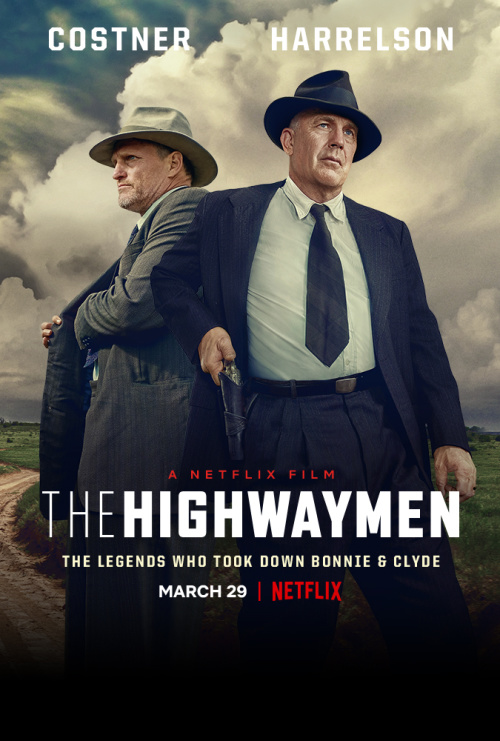

The Highwaymen Продолжительность: 132 мин. Жанр: Криминал, Драма, Детектив, Триллер. Страна: США. Режиссер: Джон Ли Хэнкок. Сценарий: Джон Фуско. Продюсеры: Кэйси Сильвер, Matthew Reynolds ... » Оператор: Джон Шварцман. Композитор: Томас Ньюман.
В 1930-е годы техасский рейнджер Фрэнк Хеймер получает задание поймать и обезвредить двух опасных грабителей банков. Вместе с напарником Мэнни Голтом он возглавляет охоту за парочкой молодых неуловимых преступников, которых зовут Бонни и Клайд.
В ролях: Кевин Костнер, Вуди Харрельсон, Ким Дикенс, Эмили Бробст, Кэти Бейтс, В. Эрл Браун, Джон Кэрролл Линч, Thomas Mann, Дэвид Барр, Джейн МакНейлл.
Комментарии
Интересный фильм
Неспешный триллер на реальных событиях. Показалось, что чуть-чуть переигрывают старые рейнджеры. А может и правда были такие понтовые по натуре.
Леон1962разбойники с большой дороги
Фильм хороший! Какой может быть экшен в то время? Все так как должно быть, нудная слежка. Те кто не понял удачи!
orange-284Ну честно говоря фильм хороший, но ожидал больше динамики. Это фильм драма, а не боевик. В принципе достоин уделения одного киновечера.
Ruslan_Moscow